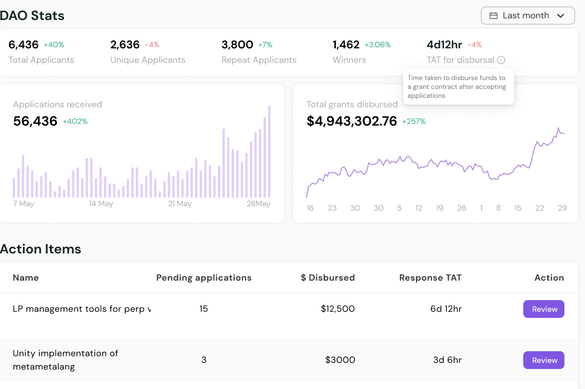

Grants is an effective way to reward contributors to the ecosystem, and make the protocol more valuable. We must identify active members of our community to run our grant program rather than a centralized committee.
If you are actively contributing to the ecosystem, we believe you should also be allocated a budget to disburse as grants - to attract the highest quality builders.
Foundation money should move as close as possible to the builder, especially during the bear market.
Questbook has worked with grant programs across the ecosystem - including Polygon, Solana, Aave, Celo, Klaytn, Harmony and many more. The following is a temp check, to see if there is interest in setting up a decentralized grant program based on our learnings from over 200 applicants and 30 grant managers from all over web3.
Problem with current grant programs
People contributing to the ecosystem should be incentivized, to attract even more contributions. When a grant program is not run effectively, we end up with fewer builders bolstering our ecosystem. The top two reasons for a poorly run grant program are :
- Committee members have blind spots - Members of a grant committee cannot be expected to have the expertise to identify the right builders and projects across all domains. They might have deep knowledge in one domain, but left lacking in another. We could lose great builders to this blind spot.
- Committee burns out - A committee of 5-8 members gets overwhelmed with application volume resulting in burnouts. This results in a slower processing time for grant applications, leaving builders frustrated.
Solution - Individuals run grant programs
An ideal solution for making the grant program more efficient is by making it more decentralized. Ethereum Foundation proposed and applies a framework called Delegated Domain Allocator.
“We also believe that more decentralized funding is important for the future of the Ethereum ecosystem. We continuously try to allocate resources to third parties that we believe can make better decisions than us within certain domains.” [EF report, Page 16]
If you are an active member of the community, and have a domain of deep expertise - you should be running a grant program for that domain on behalf of the foundation.
-
We’d like to help identify 5 such domains.
- These domains could include security auditing, developer tooling, user onboarding etc.
-
Each domain will have a delegated domain allocator
- This domain allocator will have full control to disburse a budget allocated by the foundation as grants in the said domain
-
Community reviews and votes on efficiency of domain allocator
- All the performance is publicly viewable via visualizations and dashboards.
- If the performance is not good, the community can vote to discontinue the domain allocator.

We proposed this mechanism on Compound Governance to an overwhelming positive response.
About Questbook
Product
- A decentralized product to seamlessly manage delegated domain allocators
- Workflow management - receiving applications, reviewing them, paying out - all from one place
- Rich dashboards and reporting to view the performance of domain allocators
- Milestone based payouts - We track milestones and allocators can disburse funds only when milestones are hit
- Open sourced, free to use, no centralized database or servers used in the product.
- https://questbook.xyz
Company
- YC W21
- Series A funded - Lemnis Capital, Dragonfly, Hashed, Coinbase Ventures, Balaji Srinivasan and more
- Founders working in crypto/web3 since 2017
Our ask
We’re trying to access the interest in the community for implementing the delegated domain allocators framework.
If you think you can add value as a domain allocator, we’d love to hear from you. Please do express your interest here.
If there is interest, we’ll formalize a proposal and create a strategy to implement over the next few months.
Appendix
What is the time commitment for a Domain Allocator?
- ~10 hr per week
- Subject to volume of applications
- Review incoming applications, invite collaborators on the review process, disburse funds when milestones are hit.
How is the Domain Allocator Compensated
- 10% of the funds managed can be allocated as renumeration for the domain allocator.
- In order to align with the goals of the foundation, a performance bonus can also be considered ie., 60% of the pay as a fixed/hourly payment and the remaining 40% based on the ROI metrics of the grants DAO.
How can domain allocators be more accountable
- One person from the foundation shall be a multisig on a safe for the said domain - to make sure money isn’t siphoned.
- Performance clearly visible via visual dashboards for the community members to make a judgement.